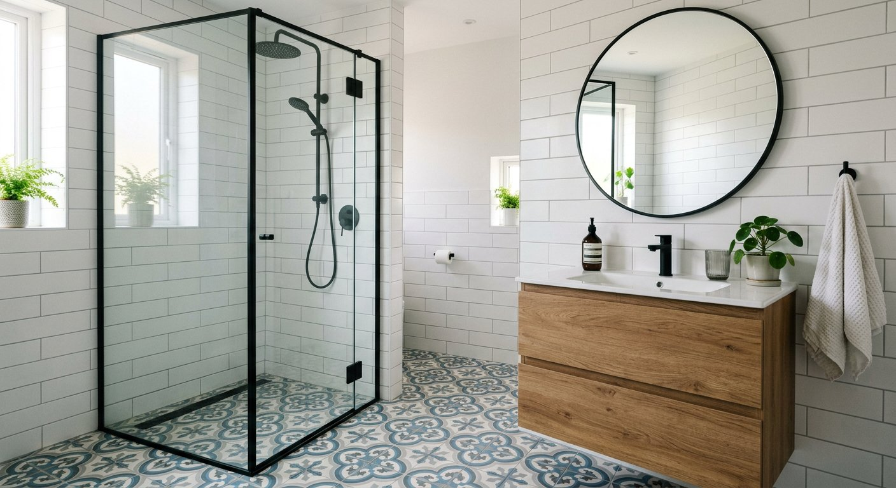

Un baño bien reformado aporta confort, estilo y valor a tu vivienda. En Tadelart Reformas somos especialistas en reformas de baño en el sur de Madrid, trabajando con materiales de primera y una ejecución impecable en impermeabilización, alicatados y acabados.
Cambiamos tu vieja bañera por un plato de ducha a ras de suelo, instalamos sanitarios suspendidos, griferías empotradas, muebles a medida e iluminación LED, adaptándonos siempre a tu presupuesto y tu estilo.
Trabajamos en Arroyomolinos y urbanizaciones cercanas: centro, El Bosque, La Cañada, Los Ángeles, Montecastillo, La Vega y zonas residenciales adyacentes. Estamos familiarizados con los chalets, adosados y pisos de nueva construcción de la zona y sus particularidades constructivas.